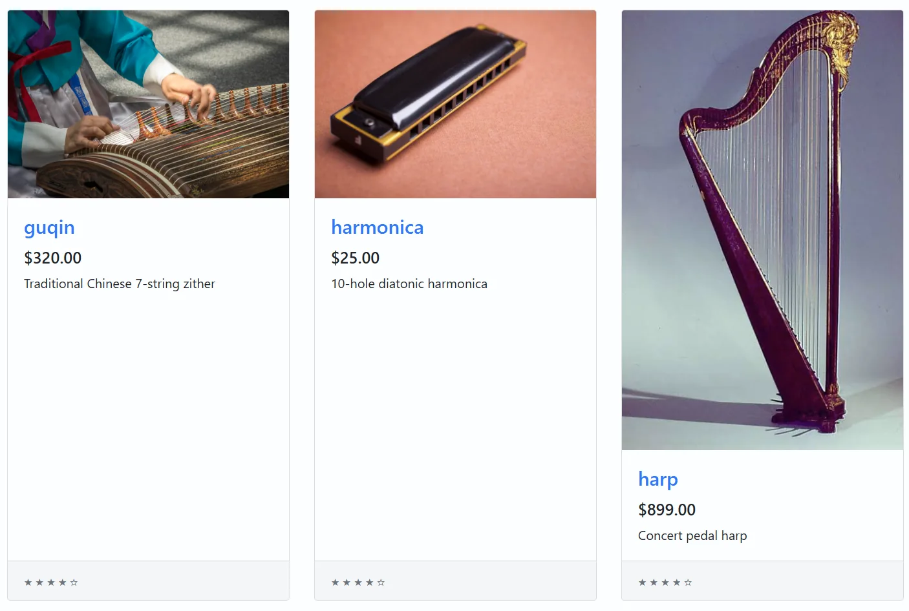
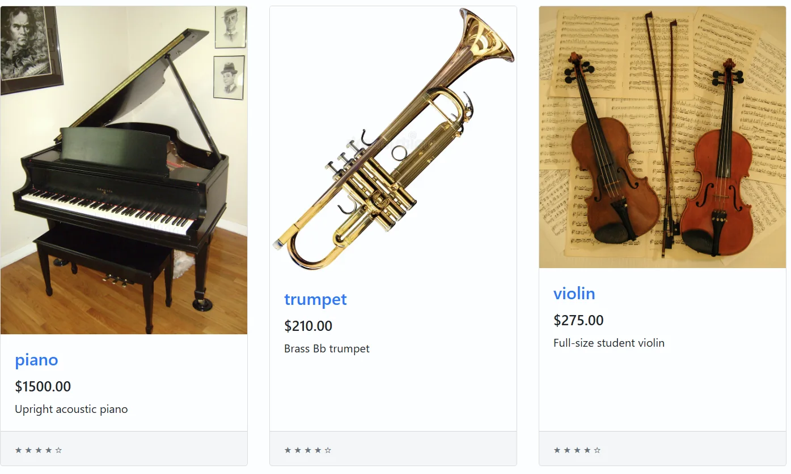
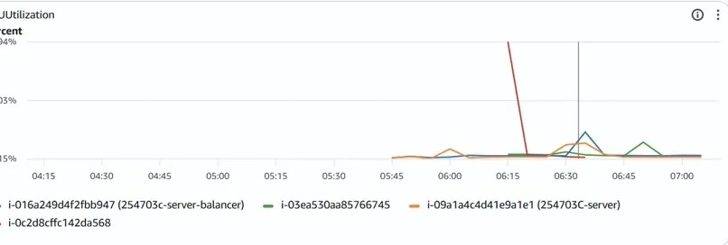
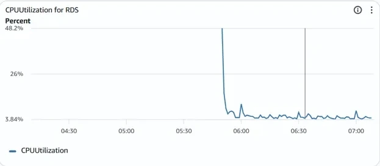
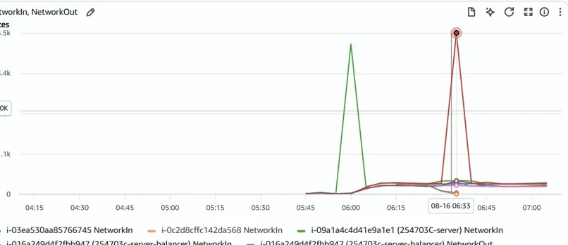

PROJECT 04 / CLOUD COMPUTING
AWS Music Store Web Application.
I built a music-store website on AWS and connected the servers, database and storage behind it.
School cloud deployment
Project at a glance
Configured the AWS catalogue stack, monitored it and compared instance types.
AWS · MySQL · CloudWatchA school catalogue, not a production store. Instance comparison supported t3.micro for this workload.

Project overview
For the Cloud Computing Development Project, I built a music-store catalogue on AWS. The assignment required a page showing nine instruments, with product details held in a database and images stored separately. It also required attention to reliability, performance and a $50 budget.
- Requests passed through an Application Load Balancer to EC2 instances in an Auto Scaling Group across two availability zones.
- RDS MySQL held the product information, with Multi-AZ configured for a standby database, while S3 held the images.
- Security-group rules controlled access between the components.
I worked on the AWS configuration and application deployment, then checked resource usage with CloudWatch and set up SNS and budget alerts. I compared t3.micro and t3.small using ApacheBench and used a Python boto3 script to check the Auto Scaling Group’s health. The result was a working school catalogue, rather than a shop processing real customer orders.

The problem
The assignment required a nine-product music catalogue hosted on AWS, with separate product data and image storage. It also included scaling, monitoring and a $50 budget limit.
The solution
I connected EC2 web servers, an Application Load Balancer, an Auto Scaling Group, RDS MySQL and S3. CloudWatch, SNS and budget alerts were used to monitor the setup.
Explore the cloud stack.
Select a component to see its part in the project.
Visitor
A visitor opens the instrument catalogue in a browser.
View complete diagram
Application and monitoring
The main image shows the first three products. These screenshots show the remaining six. Select an image to enlarge it.
Catalogue · Guqin to harp
Guqin, harmonica and harp products.

Catalogue · Piano to violin
Piano, trumpet and violin products.
I used these CloudWatch charts to check server CPU usage, database CPU usage and network traffic.

EC2 CPU usage
EC2 CPU usage during monitoring.

RDS CPU usage
RDS CPU usage.

Network traffic
Network traffic in and out.
What I worked on
- Configured the VPC, load balancer, EC2 instances, Auto Scaling Group, RDS MySQL and S3 for the catalogue.
- Restricted HTTP access to the web instances so requests came through the load balancer’s security group. The database was accessed within the VPC.
- Configured RDS Multi-AZ for a standby database in another availability zone.
- Compared t3.micro and t3.small using ApacheBench under the same load. The report found comparable performance for this application.
- Monitored CPU usage and network traffic with CloudWatch. Set a StatusCheckFailed alarm at Auto Scaling Group level and connected it to SNS email notifications.
- Configured a $50 monthly budget with an alert at 80%. Used a Python boto3 script to check Auto Scaling Group health.
Technologies
Results, limitations & next steps
The catalogue displayed nine musical instruments, with names, prices and descriptions in MySQL and product images in S3. The load balancer and Auto Scaling Group handled the web layer, with monitoring and spending alerts configured alongside it.
The instance comparison supported using t3.micro for this workload. This was a school application, not a shop taking real orders or evidence of production-scale performance.